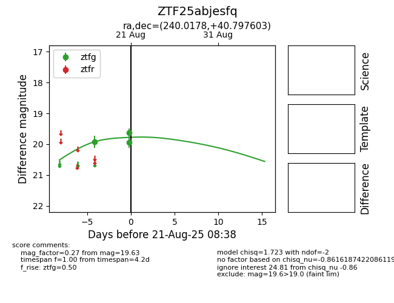

Target ZTF25abjesfq at 2025-08-21 08:38, see:
FINK: fink-portal.org/ZTF25abjesfq
Lasair: lasair-ztf.lsst.ac.uk/objects/ZTF25abjesfq
ALeRCE: alerce.online/object/ZTF25abjesfq
alt names
ZTF25abjesfq (ztf,alerce)
coordinates:
equatorial (ra, dec) = (240.0178,+40.79760)
galactic (l, b) = (64.9273,+49.11824)
photometry
last ztfg=19.63
3 ztfg detections
